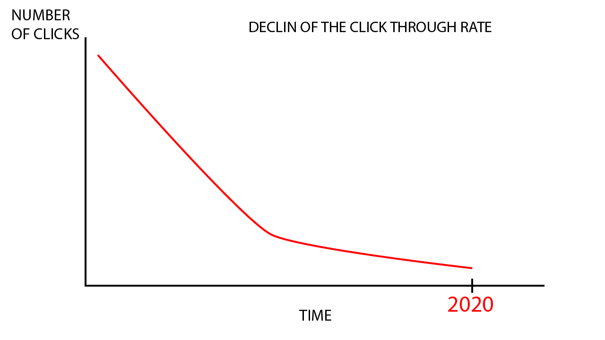
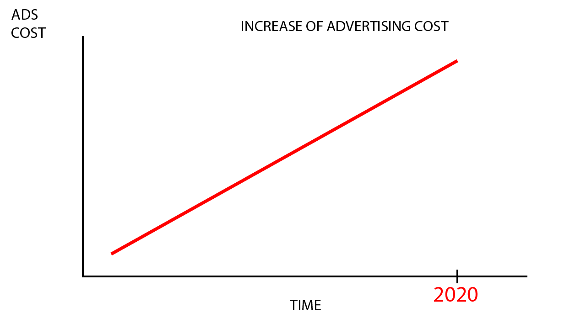

Jun 30, 2020
LIKE THIS MARKETPLACE
Here is what a poor marketer was doing. He went into all forums, looking for someone who was asking one question. Once he found this question, he fastly went to an encyclopedia or a search engine looking for an answer. This answer found he then came back to the forum and posted a short answer with the link of the complete answer that he published entirely into his website. By doing like he was expecting that the one who issued the question click his link and his website to have a better rank in search engine results. Of course, at the beginning lot of persons were clicking like crazy but year by year here is what happened

Hey, a lot of bad marketers are still doing like that in Quora, stack exchanger platforms like that. They get poorer and poorer clicks. The poor marketer was already poor so he was not losing his money but simply his time. For the wealthy advertised, he was just buying ads instead of working hard like the poor marketer. here is what happened to him

He keeps spending more and more and ended up being poor like the marketer
The linchpin marketer don't care about Pagerank. He cares about being usefully unique. Internet seems to be the marketplace of tricks and hack for more click; more leads, more sales, more and more .. I think the real world also. know that there are a lot of people waiting for someone like you to group them in a single real or digital space which can be seen as a marketplace for change, for people who seek to make things better by doing things better. During all these times when the advertiser and the poor marketer were hustling, the linchpin marketer was thinking deeply about the change he wanted to make and who were interested in seeing this change happens. it took him years to figure out that there are many like him all around the world waiting for him to show up and lead them by offering them the best he can.
Internet is marketplace oof change and status, if you figure out who seek change, status, or both and you know who can provide them, you are on a good way of managing a useful marketplace. A marketplace like this.